5 Programa
Neste capítulo, o CAA avaliou programa do ponto de vista da articulação, aderência e atualização das áreas de concentração, linhas de pesquisa, projetos em andamento e estrutura curricular. O CAA também avaliou o corpo docente permanente, sua compatibilidade com as áreas de concentração, a contribuição para o ensino, e a produtividade em pesquisa.
5.1 Áreas de Concentração e Linhas de Pesquisa
O CAA analisou as áreas de concentração do PPGT e os perfis dos docentes para verificar a necessidade de possíveis atualizações. Uma área de concentração deve delimitar o ramo de conhecimento, atividade ou competência de programas de pós-graduação. A definição clara das áreas de concentração é essencial para orientar os candidatos, discentes, docentes e a comunidade externa sobre os objetivos e foco de cada área. Além disso, possibilita o alinhamento entre os interesses acadêmicos e as linhas de pesquisa ofertadas.
No caso do PPGT, nota-se a falta de uma descrição sobre as áreas de concentração: Ambiente, Ciências dos Materiais e Sistemas de Informação e Comunicação. Isso limita a compreensão sobre o escopo de atuação de cada área e pode comprometer a atração de novos alunos e a articulação interna de projetos e colaborações. Apresentamos a seguir sugestões para a definição das áreas de concentração do PPGT.
Sugerimos que os docentes de cada área verifiquem se as sugestões refletem, de fato, a área de concentração. Sugerimos que, em um segundo momento, a CAA verifique se periódicos em que há publicações de docentes são bem classificados no Qualis Capes (ou JCR Clarivate). Desse modo, a definição das áreas pode ser mais (ou menos) abrangente. Por exemplo, a área de concentração em Ambiente abriga docentes que publicam em periódicos sobre gestão e direito ambiental. Porém, periódicos dessas temáticas não são, frequentemente, bem classificados no Qualis Capes ou JCR Clarivate.
Com o ingresso de novos docentes no PPGT, é importante que futuramente a CAA elabore um formulário eletrônico para perguntar se a área de concentração (e linhas de pesquisa) contemplam suas áreas de atuação. A rigor, a aderência de novos docentes às áreas de concentração deveria ser avaliada durante as provas do concurso público.
Sugerimos que a definição das linhas de pesquisa seja revisada pelos docentes do PPGT. O motivo é que a definição nos parece desatualizada porque não abrange os novos desafios da sociedade. É perceptível que as linhas de pesquisa atualmente descritas no PPGT, embora amplas, necessitam de uma atualização para melhor integrar temas emergentes e relevantes, tais como a adaptação às mudanças climáticas, a transformação digital, o desenvolvimento de tecnologias sustentáveis e a inteligência artificial.
Portanto, a definição de áreas de concentração e a atualização de linhas de pesquisa do PPGT pode fortalecer a relevância acadêmica e social do programa, ao mesmo tempo em que aumenta sua atratividade para discentes, pesquisadores e instituições parceiras. Uma revisão cuidadosa e criteriosa das linhas de pesquisa poderá contribuir significativamente para a formação de profissionais e pesquisadores preparados para atuar de forma inovadora e responsável em um mundo em constante evolução tecnológica e ambiental.
5.2 Estrutura Curricular
O CAA levantou as informações sobre a estrutura curricular do PPGT, particularmente sobre o oferecimento das disciplinas ao longo do quadriênio 2021-2024, segundo informações disponibilizadas publicamente pelo próprio PPGT. O número de oferecimentos de cada disciplina do programa, por área de concentração, é mostrado nas tabelas a seguir. Para cada área de concentração, apresentamos também os temas das disciplinas de Tópicos que foram oferecidos.
5.2.1 Núcleo geral
| Sigla | Créditos | Nome | Oferecimentos |
|---|---|---|---|
| AA002 | * | Tese de Doutorado | * |
| FT054 | 4 | Pesquisa Científica: Concepção, Desenvolvimento e Publicação | 4 |
| FT061 | 4 | Seminário de Tese | 4 |
| FT025 | 2 | Estudos Dirigidos I | * |
| FT055 | 4 | Inovação e Transferência de Tecnologias | 3 |
| FT060 | 4 | Matemática Discreta | 3 |
| FT081 | 4 | Escrita Acadêmica | 4 |
| FT085 | 4 | Tecnologias Emergentes: Dilemas, Riscos e Desafios | 1 |
| FT094 | 4 | Métodos Numéricos e Estatísticos | 5 |
| FT100 | 2 | Atividades de Ensino, Pesquisa e Extensão | 0 |
| —– | Qualquer disciplina de Pós-Graduação oferecida pela Unicamp |
5.2.2 Ambiente
Avaliação, Gerenciamento, Controle e Tratamento; Modelagem e Simulação
| Sigla | Créditos | Nome | Oferecimentos |
|---|---|---|---|
| FT042 | 4 | Tópicos em Tecnologia para o Ambiente I | 6 |
| FT044 | 2 | Tópicos em Tecnologia para o Ambiente II | 6 |
| FT051 | 4 | Transportes de Fluidos | 1 |
| FT052 | 4 | Tecnologias Avançadas e Gestão Ambiental | 2 |
| FT056 | 4 | Gestão, Qualidade e Sustentabilidade Socioambiental | 1 |
| FT071 | 4 | Gerenciamento e Tecnologias para Bacias Hidrográficas | 0 |
| FT072 | 4 | Legislação e Políticas Públicas Ambientais | 3 |
| FT073 | 4 | Gerenciamento de Resíduos Sólidos | 4 |
| FT074 | 4 | Aspectos Biológicos da Aplicação de Resíduos no Solo | 3 |
| FT076 | 4 | Poluição Atmosférica, Clima e Tecnologia | 2 |
| FT079 | 4 | Sustentabilidade, Tecnologia e Ambiente Construído | 2 |
| FT082 | 4 | Tendências em Tecnologias Ambientais | 3 |
| FT083 | 4 | Ambiente: Monitoramento e Controle | 3 |
| FT085 | 4 | Tecnologias Emergentes: Dilemas, Riscos e Desafios | 1 |
| FT086 | 2 | Obras Hidráulicas | 1 |
| FT087 | 4 | Planejamento e Análise Experimental | 2 |
| FT088 | 4 | Modelagem Matemática de Fenômenos Ambientais e Aproximação Numérica | 4 |
| FT089 | 4 | Microbiologia do Tratamento de Águas Residuárias | 1 |
| FT093 | 4 | Resíduos Sólidos Aplicados em Materiais de Construção | 5 |
| FT096 | 4 | Técnicas Analíticas Aplicadas à Amostras Ambientais | 3 |
| FT101 | 4 | Cinema, Tecnologia e Ambiente | 2 |
| FT103 | 4 | Monitoramento e Sensoriamento para Obras Hidráulicas e de Redes de Abastecimento | 2 |
| FT104 | 4 | Fotogrametria e SIG Aplicada a Ambientes Urbanos | 1 |
FT042: Tópicos em Tecnologia para o Ambiente I
- Durabilidade de compósitos cimentícios em ambientes
- Materiais não convencionais empregados em compósitos cimentício
- Nanotecnologia Ambiental: Aplicações e Impactos de Nanomateriais
- Tópicos avançados em genotoxicologia ambiental
- Genotoxicologia ambiental
- Sistemas embarcados para obras hidráulicas e de abastecimento
- Microbiologia do Tratamento de Águas Residuárias
- Environmental Technologies for Water and Air Decontamination
- Produção de Biocombustíveis
- Infraestruturas verdes e ferramentas de espacialização de dados
- Modelagem matemática-computacional e algoritmos de otimização em temas relacionados à transição energética
- Cinema, Tecnologia e Ambiente
FT044: Tópicos em Tecnologia para o Ambiente II
- Materiais não convencionais empregados no ambiente construído
- Métodos cromatográficos de análise aplicados a estudos ambientais
- Infraestruturas verdes e ferramentas de espacialização de dados
- Hidroinformática
5.2.3 Ciências dos Materiais
Desenvolvimento, Utilização e Caracterização; Modelagem e Simulação
| Sigla | Créditos | Nome | Oferecimentos |
|---|---|---|---|
| FT069 | 4 | Tópicos Especiais em Materiais I | 7 |
| FT070 | 2 | Tópicos Especiais em Materiais II | 1 |
| FT020 | 4 | Técnicas para Instrumentação | 0 |
| FT047 | 4 | Aspectos Tecnológicos de Materiais de Construção | 3 |
| FT058 | 4 | Ciência dos Materiais | 3 |
| FT066 | 4 | Modelagem e Simulação Computacional em Materiais | 1 |
| FT087 | 4 | Planejamento e Análise Experimental | 0 |
| FT093 | 4 | Resíduos Sólidos Aplicados em Materiais de Construção | 0 |
| FT102 | 4 | Tecnologias Construtivas Inovadoras | 1 |
FT069: Tópicos Especiais em Materiais I:
- Materiais de construção e sustentabilidade
- Introdução à corrosão
- Interpretações de Ensaios de Técnicas Eletroquímicas em Corrosão, Parte II – Prática Experimental
- Simulação de Corrosão por circuito equivalente, Parte III
- Introdução à Nanotecnologia
- Tecnologia de Transportes
- Cristalografia e Difração de Raios-X
FT070: Tópicos Especiais em Materiais II
- Microestrutura do concreto
5.2.4 Sistemas de Informação e Comunicação
Gestão, processamento e armazenamento da informação; Sistemas de Comunicação Óptica e Via Rádio
| Sigla | Créditos | Nome | Oferecimentos |
|---|---|---|---|
| FT043 | 4 | Tópicos em Tecnologia para Informação I | 4 |
| FT045 | 2 | Tópicos em Tecnologia para Informação II | 8 |
| FT067 | 4 | Tópicos em Comunicação I | 5 |
| FT068 | 2 | Tópicos em Comunicação II | 3 |
| FT007 | 4 | Eletromagnetismo Aplicado | 3 |
| FT020 | 4 | Técnicas para Instrumentação | 0 |
| FT022 | 4 | Tecnologias de Antenas e Micro-ondas | 3 |
| FT065 | 4 | Desempenho de Redes de Comunicação | 2 |
| FT077 | 4 | Processamento de Alto Desempenho | 2 |
| FT084 | 4 | Introdução a Mineração de Dados | 3 |
| FT091 | 4 | Redes Complexas | 1 |
| FT095 | 4 | Engenharia e Gestão do Conhecimento | 3 |
| FT098 | 2 | Teoria da informação: uma introdução | 1 |
FT043 : Tópicos em Tecnologia para Informação I
- Lógica
- Fundamentos da Ciência de Dados
- Sensoriamento Remoto
- Conceitos e otimização de sistemas de energia elétrica
FT045: Tópicos em Tecnologia para Informação II
- Informática na Educação
- Tecnologias e Educação
- Novas abordagens e tecnologias para o ensino
- Visualização de Informação
- Análise Exploratória de Dados
- Introdução às redes neurais
- Análise de Dados Geoespaciais
- Introdução ao Aprendizado de Máquina
- Redes neurais e aplicações utilizando Pytorch
- Probabilidade e Processos Aleatórios
- Utilização do sistema Látex
- Introdução ao Latex
FT067: Tópicos em Comunicação I
- Introdução à Engenharia de Micro-ondas
- Comunicações por Luz Visível
- Processamento de Sinais Bidimensionais
- Segmentação e Classificação de Imagens
FT068: Tópicos em Comunicação II
- Emerging wireless communication technologies (4G / 5G / 6G / IoT) and their social, economic and political impacts on society
- Didática e Metodologias de Ensino
FT105A: Tópico Interdisciplinar I
- Introdução ao Aprendizado de Máquina
- Teorias aplicadas à modelagem e manipulação do conhecimento
5.2.5 Considerações do CAA
Em sua análise, o CAA observou que as disciplinas de Tópicos foram as mais oferecidas. Analisando-se os temas das discplinas de Tópicos, podemos verificar a existência de temas que poderiam ser agrupados na forma de uma disciplina Regular do PPGT seja por similaridades, seja pela quantidade de oferecimentos. A núvem de palavras mostrada a seguir revela um padrão no que é ministrado nas disciplinas de tópico, segundo suas ementas.
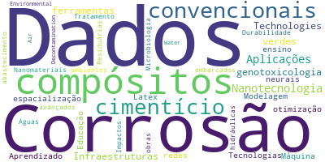
Temas muito reincidentes são: Visualização de Informação, Informática/Tecnologias na Educação e Análise de dados. Este último engloba o ensino de introdução às redes neurais, aprendizado de máquina, aplicações de redes neurais utilizando Pytorch, fundamentos da Ciência de dados e análise exploratória de dados. Os temas sobre educação envolvem novas abordagens e tecnologias para o ensino, didática e metodologias de Ensino.
O CAA também analisou a distribuição das disciplinas que são oferecidas em conjunto, por mais do que um docente. No gráfico a seguir, o tamanho dos círculos são proporcionais ao número de docentes que compartilham a respectiva turma da disciplina. O gráfico também indica a quantidade de disciplinas regulares (de ementa fixa) e tópicos (de ementa variada).
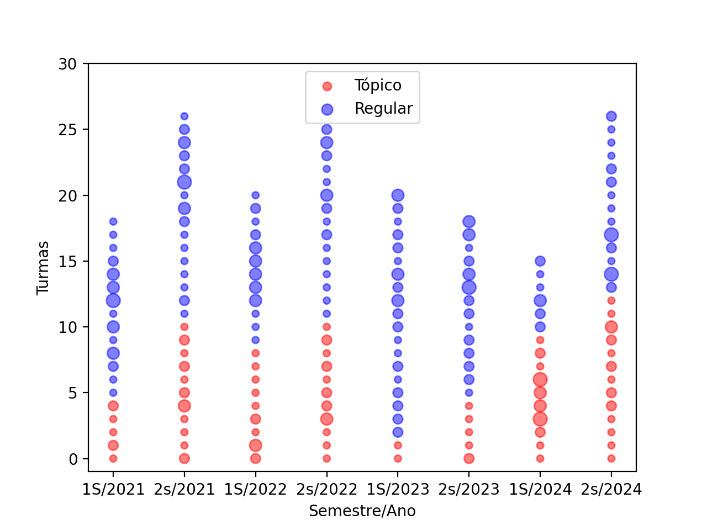
Nota-se que tivemos no segundo semestre de 2022 um grande número de disciplinas sendo oferecidas, sendo que isso foi seguido por uma diminuição gradual, semestre a semestre, do conjunto de disciplinas ofertadas, até culminar no primeiro semestre de 2023 com o menor número de disciplinas em um único semestre dentro do quadriênio analisado. O segundo semestre de 2024 voltou a observar um grande número de disciplinas oferecidas. Isso sugere volatilidade no oferecimento de determinadas disciplinas. Além disso, o CAA observou também que cinco disciplinas regulares não foram oferecidas nenhuma vez no quadriênio (FT087, FT100, FT071, FT020 e FT093), o que deveria ser um indicativo de que essas disciplinas poderiam ser removidas do catálogo do programa por conta do desuso.
5.3 Perfil e Adequação do Corpo Docente
A distribuição do corpo docente nas áreas de concentração é bastante equilibrada, como mostra o gráfico a seguir.
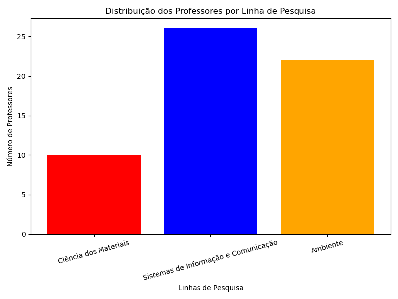
A avaliação CAPES 2017-2020 indicou o não cumprimento da exigência de se ter 30% dos docentes do Programa como colaboradores. Durante o quadriênio em curso, o PPGT agiu a fim de cumprir essa exigência, como pode ser visto no gráfico a seguir, que mostra a razão entre a soma de docentes colaboradores e visitantes e o número de permanentes. A linha tracejada representa a porcentagem máxima de 30% permitida pela CAPES, de forma que desde 2021 o PPGT manteve a razão dentro do limite exigido pela CAPES.
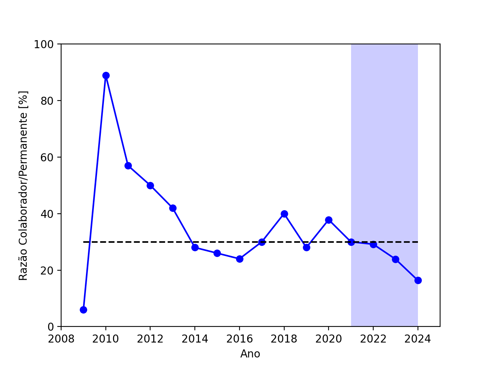
O CAA coletou dados sobre a interação entre os docentes permanentes do PPGT, a fim de quantificar a interdisciplinaridade nas colaborações internas. O grafo a seguir mostra as interações entre os docentes permanentes, medidas por meio da coautoria em artigos científicos. Assim, os vértices do grafo representam os professores permanentes do programa e uma aresta liga dois vértices se há um paper escrito pelos dois professores em questão. Linhas mais espessas indicam uma interação mais forte e proporcional ao número de artigos em conjunto entre os respectivos docentes. Dos 51 docentes permanentes, 34 (66%) tiveram artigos com outros docentes do PPGT. Além disso, o número total de interações foi de 194.
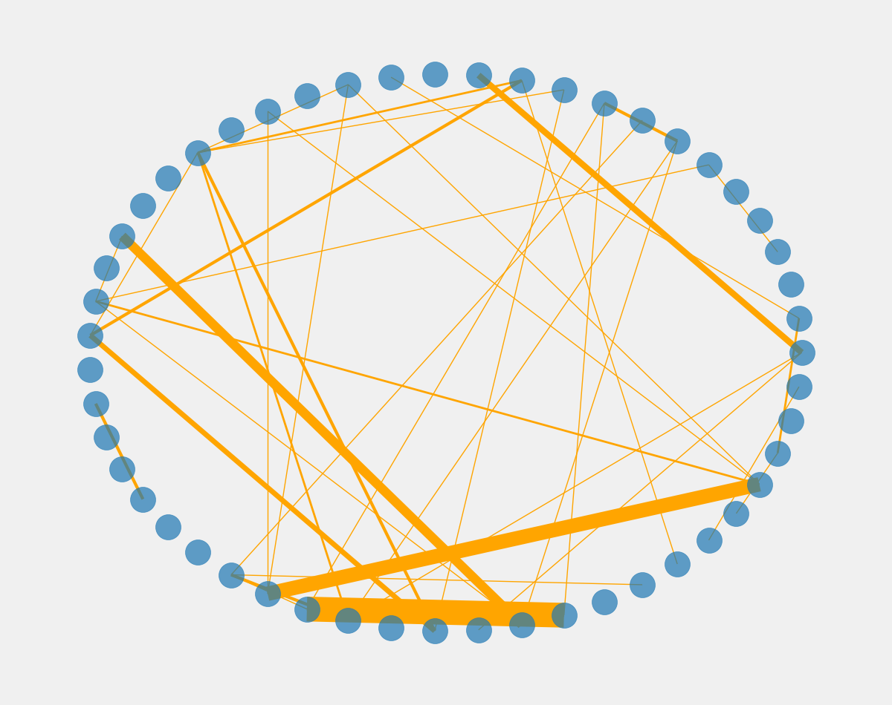
O CAA também analisou a distribuição das interações em relação às áreas de concentração do PPGT: Sistemas de Informação e Comunicação (Inf), Ambiente (Amb) e Materiais (Mat). O gráfico a seguir mostra como se dá a interação entre docentes dessas áreas. Vemos que docentes da área Ambiente publicam mais trabalhos que tem co-autores outros docentes da área Ambiente (Amb-Amb), seguidos por docentes Inf-Inf e depois por Mat-Mat. Em relação a interação entre áreas, vemos uma colaboração mais relevante entre docentes de Sistemas de Informação e Comunicação com docentes de Ambiente.
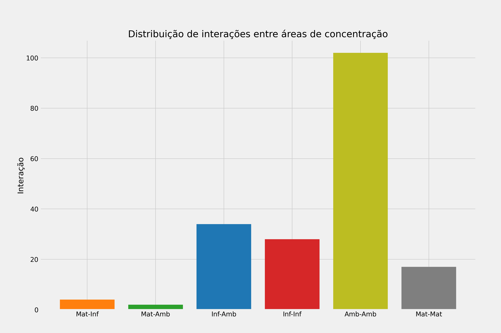
Com relação ao envolvimento do corpo docente nas atividades de formação no programa, o CAA coletou informações sobre as disciplinas oferecidas no quadriênio, disponíveis no sítio do PPGT. A partir desses dados, verificamos que 90% dos docentes permanentes ofereceram disciplinas no PPGT. Esse oferecimento segue a distribuição indicada a seguir.
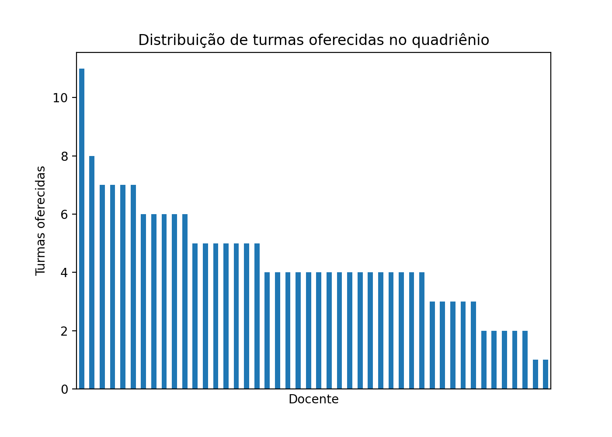
Pelo gráfico, é possível notar que o corpo docente é bastante colaborativo no que diz respeito ao oferecimento de disciplinas, sendo que grande parte dos professores oferece disciplinas em uma média igual ou superior a uma por ano (professores que ofereceram quatro ou mais disciplinas no quadriênio).
Com relação ao envolvimento do corpo docente nas atividades de pesquisa, os dados obtidos para contabilizar a produção intelectual foram extraídos dos currículos Lattes dos docentes permanentes do PPGT por meio do programa lucyLattes.py v1.1.
5.3.1 Resumo da Produção Intelectual do Corpo Docente
Período avaliado: 2021 - 2024
Número de membros na equipe: 51
Número de projetos de extensão: 29
Número de projetos de pesquisa: 115
Livros publicados: 13
Capítulos publicados: 65
Artigos completos publicados em periódicos: 411
Orientações: Dissertação de mestrado: 96
Tese de doutorado: 41
Pelo resumo, percebemos que a produção docente é majoritariamente concentrada na publicação científica, mas que apresenta bons resultados em todos os quesitos. Para verificar se a produção é consistente, geramos os gráficos a seguir, que mostram a quantidade de publicação de 2021 a 2024, lembrando que neste último ano a nossa análise é subestimada, dado que a coleta final foi feita em meados do segundo semestre e novas publicações podem ter sido feitas após isso.
Produção de livros por ano
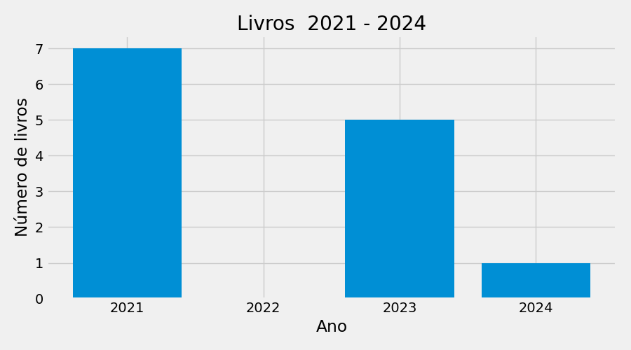
Produção de capítulos por ano
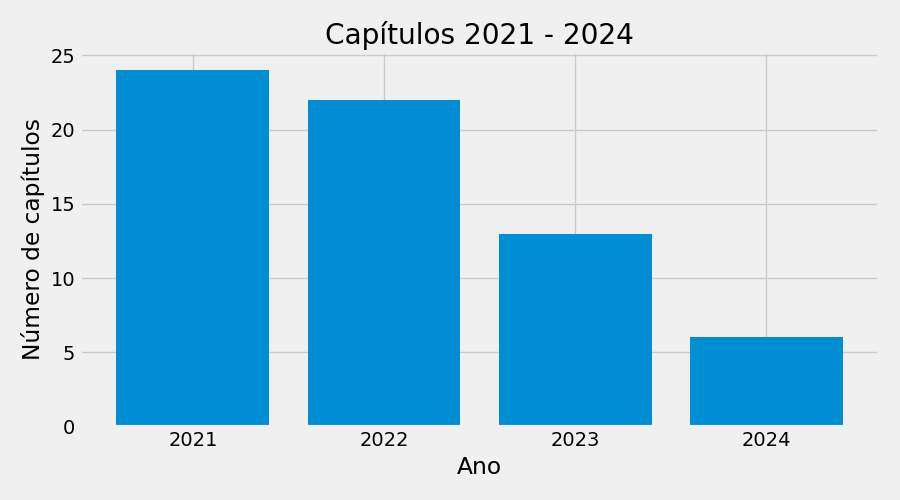
Produção de periódicos por ano
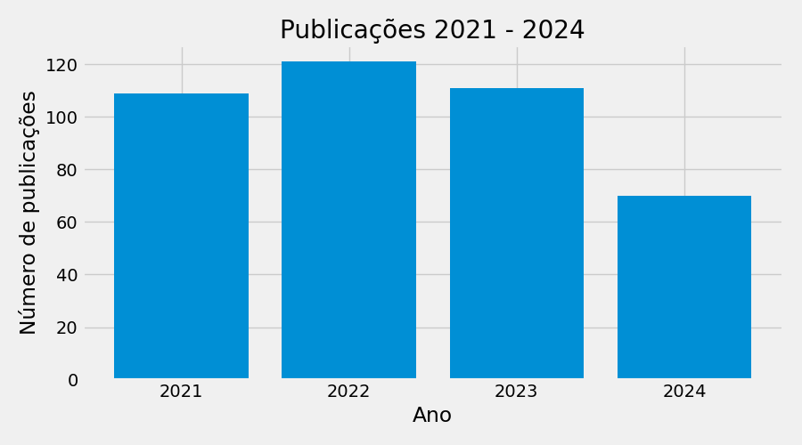
Pelos gráficos, é possível notar uma consistência visível na produção de periódicos em função dos anos, sendo que o ano com menos publicações em periódicos foi 2024, provavelmente devido ao fato de a coleta ter sido feita antes do final do ano, como já mencionamos. Nos outros dois itens, produção de livros e capítulos, vemos que o grupo publicou de forma menos padronizada, o que não aparenta ser um problema dado que a produção em periódicos é mais contundente do que a de outros materiais.
5.3.2 Produção de periódicos por Qualis
O CAA também avaliou se os professores têm publicado em veículos de qualidade. Para a classificação Qualis dos periódicos foi utilizado o arquivo qualis-INTER-2022.csv (classificação de periódicos quadriênio 2017-2020). Do total de 411 artigos publicados pelo PPGT, 251 não estavam listados na classificação da área Interdisciplinar. Desses 251, 225 foram classificados com o Qualis de alguma outra área da Capes usando o Qualis Capes. Adotou-se nesses casos a maior classificação encontrada. Os 26 periódicos restantes ficaram com a classificação “XX” indicando que não tiveram sua classificação Qualis encontrada em nenhuma área da Capes.
Dos 225 que foram classificados com o Qualis de alguma outra área da Capes, 15 foram inseridos manualmente no qualis-INTER-2022.csv corrigindo-se algum dado incorretamente informado pelo docente. Por exemplo, a Revista Brasileira de Informática na Educação estava no Lattes com o ISSN 1414-5865 e o correto é 1414-5685. Essa correção manual foi conduzida pelo CAA e está registrada para permitir correções análogas em análises futuras.
O gráfico a seguir mostra a distribuição dos trabalhos publicados pelo PPGT de acordo com a classificação Qualis. No quadriênio foram 75% de trabalhos Qualis A, 12% Qualis B e 3% Qualis C. A quantidade de trabalhos que não puderam ser classificados com Qualis foi de 9% do total de artigos publicados.
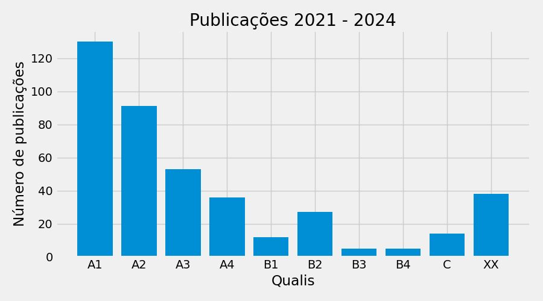
5.3.3 Indicadores CAPES de Produtividade referente a artigos científicos (IndProdArt)
O programa lucyLattes.py v1.1 foi adapatado para calcular o índice de Produtividade referente a artigos científicos (IndProdArt) considerando a área Interdisciplinar da Capes. A tabela a seguir apresenta a evolução do IndProdArt para a equipe dos docentes permanentes do quadriênio 2021-2024. Esses dados servem para avaliarmos, de certa forma, o amadurecimento da equipe de docentes do PPGT. Podemos notar que a equipe tem aumentado a produção de artigos ao longo dos quadriênios. Esses dados indicam uma tendência positiva em produzir artigos científicos e um certo amadurecimento da equipe dos docentes do quadriênio em curso. O CAA considera que essa tendência deve se manter para o quadriênio 2025-2028.
| Quadriênio | IndProdArt |
|---|---|
| 2013-2016 | 1.00368 |
| 2017-2020 | 1.20343 |
| 2021-2024 | 1.42096 |
5.4 Planejamento Estratégico do Programa e sua Articulação com a Instituição
Nesta seção, o CAA analisou o planejamento estratégico considerando também articulações com o planejamento estratégico da instituição, com vistas à gestão do seu desenvolvimento futuro, adequação e melhorias da infraestrutura e melhor formação de seus alunos, vinculada à produção intelectual – bibliográfica, técnica e/ou artística . O Planejamento feito pelo PPGT para o Quadriênio 2021-2024 está indicado a seguir. Cada item do planejamento foi avaliado pela CAA que indicou o seu atendimento.
| Item | Atendimento |
|---|---|
| Reformulação do catálogo: reavaliar a quantidade e coerência das disciplinas, além do número de créditos que o discente precisa cumprir. No início de 2021, foi realizado um questionário entre os docentes do Programa em relação ao novo catálogo e ao novo regulamento do PPG em Tecnologia, a fim de obter sugestões para a modernização e aperfeiçoamento do Programa. | SIM |
| Melhorias na prova para selecionar candidatos a bolsas. Na seleção de fevereiro de 2021, houve alterações importantes, como, por exemplo, uma bonificação na pontuação da prova para discentes que já submeteram pedidos de bolsas a alguma agência de fomento. | SIM |
| Reavaliação sobre número de orientações de cada docente do PPGT. Em 2020, foi aprovada uma resolução que altera a limitação de orientação. Antes eram 5 orientados por docente. Atualmente, cada docente permanente pode ter até 6 orientações simultâneas e cada docente colaborador pode ter até 3 orientações simultâneas. | SIM |
| Normas para bolsistas. Em 2020, foi criada uma instrução interna e aprovada pela CPG para acompanhamento das atividades dos bolsistas, por meio de relatórios mensais feitos pelos alunos e aprovados por seus orientadores em um sistema interno da Unidade. | SIM |
| Disciplinas e número de créditos exigidos. No primeiro semestre de 2021 haverá a revisão de disciplinas e créditos exigidos, tanto para o mestrado, quanto para o doutorado, de modo que os alunos tenham maior flexibilidade na sua formação e dedicação às pesquisas desenvolvidas. | SIM |
| Criar editais internos, para uso da verba PROAP. No ano de 2020, foram criados 2 (dois) editais para uso da verba PROAP destinados aos docentes para melhoria na infraestrutura dos laboratórios e, consequentemente, nas pesquisas e produções científicas. Estes e demais editais realizados e divulgados pelo PPGT no ano de 2020 podem ser consultados aqui. | SIM |
| Aumentar o incentivo da participação de eventos científicos. Infelizmente, com a pandemia, houve uma queda efetiva na participação de eventos científicos em 2020, pois vários foram cancelados ou protelados. | SIM |
| Rever os critérios para o credenciamento/recredenciamento de docentes. Em 2020, foi criada uma Instrução Normativa sobre o credenciamento e recredenciamento dos docentes, norma usada no mais recente processo de credenciamento realizado pelo Programa. | SIM |
| Trabalhar em conjunto com a secretaria de pesquisa, levantando demandas que atendam maior número de docentes de pós-graduandos. Em 2020, as tomadas de decisões nos editais para a verba PROAP, resultados e implementação foram em conjunto com a Seção de Pesquisa e com a Seção de Compras. Além disso, foi criada em conjunto uma Instrução sobre os predatórios, que dispõe sobre diretrizes, definições e recomendações, de caráter instrutivo, quanto a publicações e congressos predatórios. | SIM |
| Maior integração com a sociedade e o setor industrial de Limeira e região. | Não |
| Incentivar que os docentes ofereçam outras disciplinas do catálogo, que estejam ociosas. Em 2020, algumas disciplinas, que nunca haviam sido oferecidas, foram ministradas, como, por exemplo, as disciplinas FT087 e FT094. Este é mais um motivo para a revisão do catálogo, de forma que todas as disciplinas possam ser oferecidas e que tenham demanda. | SIM |
| Aprovação do novo Regulamento do PPGT (no primeiro semestre de 2021), com alterações relevantes para o aperfeiçoamento do Programa. Por exemplo, o prazo de integralização para alunos de mestrado e doutorado será reduzido, respectivamente, para 24 (vinte e quatro) e 48 (quarenta e oito) meses, seguindo os prazos estipulados pela Capes. | SIM |
| Criação e reformulação de instruções internas. Estas normativas estão constantemente em reformulação, atendendo às mudanças da CAPES e da Unicamp. | SIM |
| Criação de redes sociais do PPGT para melhor divulgação do Programa, ampliando também a divulgação científica, dos trabalhos desenvolvidos no PPGT, ao público não acadêmico. | SIM |
| Lives com discentes e egressos nas redes sociais, com a finalidade de ampliar a divulgação do PPG e das pesquisas realizadas. | Não |
| Reorganizar os projetos integradores de pesquisa com a perspectiva de qualificar a formação de recursos humanos e produção intelectual na área interdisciplinar. | Não |
A fim de se levantar as principais demandas do PPGT, realizamos uma consulta junto aos discentes. O CAA elaborou um questionário eletrônico com 60 questões sobre diversos aspectos do PPGT. O questionário pode ser visualizado aqui e a análise dessa percepção pode ser vista em Percepção discente.
5.5 Processos, Procedimentos e Resultados da Autoavaliação do Programa
O CAA anterior preparou um relatório sobre o PPGT contendo basicamente três análises:
Análise do último Relatório CAPES: observação das recomendações sugeridas ao PPGT pela CAPES, com foco nos itens com a pior avaliação;
Análise dos dados utilizados para o credenciamento docente: análise dos dados obtidos no processo de credenciamento docente no PPGT a fim de comparar com o recomenado pela CAPES, observando-se diferenças com os dados informado na plataforma SUCUPIRA;
Análise de aspectos subjetivos do último Relatório CAPES: observação do sucesso e evasão do egresso, qualidade das orientações e capacitação de docentes e técnicos por meio da informação contida na plataforma SUCUPIRA.
O CAA atual focou em:
Análise quantitativa da produção intelectual de cada docente utilizando dados da plataforma Lattes.
Análise quantitativa formação de recursos humanos com dados oficiais da Unicamp e também com publicações encontradas no Lattes dos docentes.
Análise da percepção discente sobre a própria formação.
Esses três ramos de coleta e análise embasou todas as conclusões e sugestões deste CAA. Do ponto de vista técnico, o CAA atual desenvolveu uma série de scripts Python que automatizaram o processo de coleta de dados e elaboração de gráficos e tabelas, o que favorece a reprodutibilidade e serve como base para futuros CAAs acompanharem a evolução do programa no próximo quadriênio. Para tanto, optou-se por obter as informações a partir de repositórios públicos como o Repositório da Produção Científica e Intelectual da Unicamp, do Currículo Lattes e da Diretoria Acadêmica (DAC) da Unicamp.